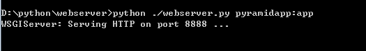
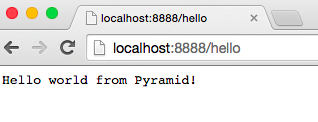
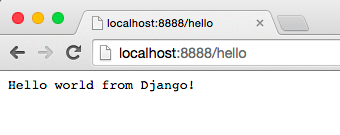
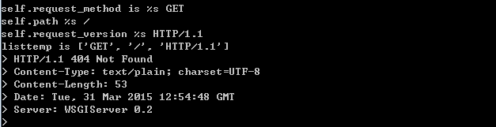

python 网络编程和其他语言都是一样的，服务器这块步骤为：1. 创建套接字2. 绑定地址3. 监听该描述符的所有请求4. 有新的请求到了调用accept处理请求
Python Web服务器网关接口（Python Web Server Gateway Interface，简称“WSGI”），可以保证同一个服务器响应不同应用框架的请求，WSGI的出现，让开发者可以将网络框架与网络服务器的选择分隔开来，例如，你可以使用Gunicorn或Nginx/uWSGI或Waitress服务器来运行Django、Flask或Pyramid应用。下面简单实现一个机遇WSGI协议的服务器。
1 | import socket |
定义了一个WSGIServer类，并且在类的init函数完成了套接字的创建、绑定、监听等。
下面实现WSGIServer的轮询检测新的连接并处理连接：
1 | def set_app(self, application): |
实现处理请求的函数
1 | def handle_one_request(self): |
解析请求
1 | def parse_request(self, text): |
返回当前服务器wsgi版本等信息
1 | def get_environ(self): |
填写app所需的回调函数
1 | def start_response(self, status, response_headers, exc_info=None): |
发送数据并且关闭连接
1 | def finish_response(self, result): |
主函数和参数解析，创建服务器
1 | SERVER_ADDRESS = (HOST, PORT) = '', 8888 |
将上面的文件保存为webserver.py
下面搭建虚拟环境，并且安装Pyramid、Flask和Django等框架开发的网络应用。
1 | [sudo] pip install virtualenv |
编写pyramidapp.py，主要是调用pyramidapp接口生成app
1 | from pyramid.config import Configurator |
可以通过自己开发的网络服务器来启动上面的Pyramid应用。python webserver.py pyramidapp:app


同样可以创建Flask应用
1 | from flask import Flask |

上述代码的工作原理：
1 网络框架提供一个命名为application的可调用对象。2 服务器每次从HTTP客户端接收请求之后，调用application。它会向可调用对象传递一个名叫environ的字典作为参数，其中包含了WSGI/CGI的诸多变量，以及一个名为start_response的可调用对象。3 框架/应用生成HTTP状态码以及HTTP响应报头（HTTP response headers），然后将二者传递至start_response，等待服务器保存。此外，框架/应用还将返回响应的正文。 服务器将状态码、响应报头和响应正文组合成HTTP响应，并返回给客户端。
可以采用多进程的方式处理多个客户端请求,将上述代码稍作修改
1 | import errno |
grim_reaper 函数为捕捉子进程退出的回调函数，父进程等待所有子进程退出后再退出，避免僵尸进程。由于子进程退出父进程捕获到消息，调用grim_reaper处理，由于父进程之前阻塞在accept上，捕获子进程销毁消息后，父进程accept失败，所以增加了errno.EINTR错误判断，如果是由于信号中断导致accept失败，就让父进程继续调用accept即可。

谢谢关注我的微信公众平台：